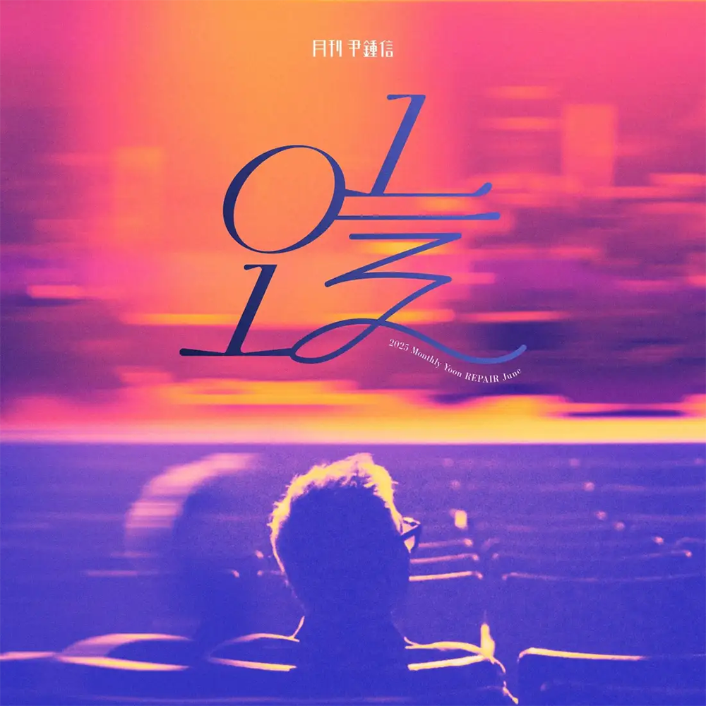

안녕하세요, 라보엠입니다.
월간 윤종신 2025년 6월 신곡 ‘오늘’을 소개해 드리겠습니다. 매달 새로운 감성을 선보이는 윤종신의 월간 프로젝트는 어느덧 15년 넘게 이어지며, 매번 일상 속 특별한 순간을 음악으로 담아내고 있습니다. 이번 6월의 노래 ‘오늘’ 역시 윤종신 특유의 섬세한 시선과 담백한 진심이 녹아든 곡입니다.

일상의 한가운데서 피어나는 감정
‘오늘’은 제목처럼 특별할 것 없는 하루, 그저 흘러가는 시간 속에서 문득 떠오르는 생각과 감정을 담고 있습니다. 윤종신은 늘 그렇듯 소소한 일상에서 영감을 받아, 누구나 공감할 수 있는 이야기를 노래로 풀어냅니다. 반복되는 하루 속에서 문득 멈춰 서서, 지금 이 순간의 소중함과 지나간 시간에 대한 아쉬움, 그리고 다가올 내일에 대한 조심스러운 기대가 자연스럽게 이어집니다.
도입부의 잔잔한 피아노와 어쿠스틱 기타가 어우러지며, 윤종신의 담백한 목소리가 곡의 분위기를 단단히 잡아줍니다. 특별한 기교 없이 솔직하게 내뱉는 가사는, 듣는 이로 하여금 자신의 하루를 돌아보게 만듭니다.
이번 곡은 미니멀한 편곡이 돋보이는데요, 피아노와 기타, 그리고 은은하게 깔리는 스트링이 곡의 감정선을 자연스럽게 이끌어갑니다. 윤종신의 목소리는 한층 더 깊어진 감성을 담아, 듣는 이의 마음에 잔잔한 파문을 남깁니다. 특히 후렴구에서 절제된 감정과 담백한 고백이 어우러지며, 노래의 진심이 더욱 진하게 전해집니다.
가사 속에 담긴 윤종신의 시선
나 여기 있어요 우리 약속한 자리
많은 시간 흘렀지만 난 기억해요
바로 오늘 만나기로 했죠
이 자리에서 우린 헤어졌었죠
다가올 그리움에 불안해하며 우린
서롤 걱정하며 이별했죠
그리곤 약속했죠
이맘때쯤이면 편한 추억으로 남을 거라 하며
부담 없이 오늘 만나기로
그대 늦는군요
그래요 이젠 외출 준비가 길어질 나이죠
내겐 그대 수수했던 모습뿐인데
오늘도 전처럼 창가에 있죠
길게 늘어진 차들이 보이네요
천천히 와요
그리 지루하지 않아요
혹시 잊었나요 오늘 이 자리
그렇게 요즘 행복한가요
그 생각에 조금 서러워지네요
자 이제 그만 난 일어날게요
그대 처음으로 약속 어겼네요
그런데 왜 내가 더 미안한 걸까요
‘오늘’의 가사는 익숙한 일상 속에서 느끼는 소소한 행복, 때로는 스치듯 지나가는 후회와 미련, 그리고 다시 한 번 용기를 내보는 다짐이 교차합니다. “아무 일도 없는 하루가 어쩌면 가장 큰 선물일지도 몰라”라는 구절에서는, 평범한 오늘이 얼마나 소중한지 다시금 생각하게 됩니다.
윤종신은 이 곡에서 자신의 경험과 생각을 솔직하게 녹여냈습니다. 지나간 사랑, 놓쳐버린 기회, 그리고 아직 오지 않은 내일에 대한 두려움까지, 다양한 감정이 한 편의 에세이처럼 펼쳐집니다. 하지만 곡 전체를 관통하는 정서는 따뜻함과 위로입니다. ‘오늘’이 힘들었던 이에게는 작은 위로를, 평온했던 이에게는 소소한 감사의 마음을 전합니다.
공감과 위로, 그리고 오늘의 의미
‘오늘’은 누구에게나 주어진 하루, 그 하루를 어떻게 살아가고 있는지, 그리고 어떤 마음으로 내일을 맞이할지에 대한 질문을 던집니다. 바쁘게 흘러가는 시간 속에서 잠시 멈춰 서서, 지금 이 순간을 온전히 느껴보라는 윤종신의 메시지가 곡 전체에 스며 있습니다.
이 곡을 듣고 있으면, 내게 주어진 오늘이 결코 당연하지 않다는 사실을 새삼 깨닫게 됩니다. 어쩌면 평범한 오늘이야말로 가장 특별한 선물일지도 모릅니다. 윤종신의 ‘오늘’이 여러분의 하루에 작은 위로와 따뜻한 공감이 되어주길 바랍니다.
6월호 '오늘'
월간 윤종신 편집팀입니다
yoonjongshin.com
맺음말
월간 윤종신 2025년 6월의 ‘오늘’은 특별한 사건이나 거창한 메시지 없이, 그저 우리 모두의 하루를 노래하고 있습니다. 윤종신의 진솔한 목소리와 섬세한 가사가 어우러진 이 곡은, 바쁜 일상 속에서 잠시 숨을 고르고 싶은 순간에 꼭 어울리는 노래입니다. 오늘 하루, 이 노래와 함께 자신만의 ‘오늘’을 돌아보는 시간을 가져보시길 바랍니다.